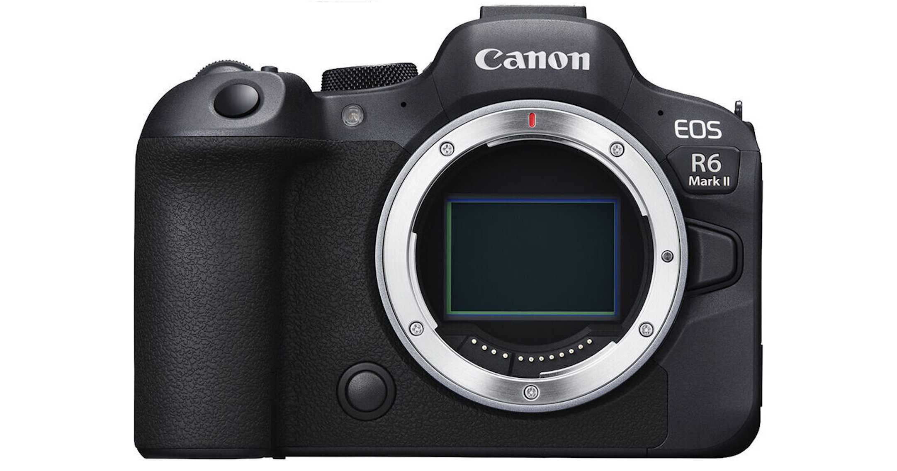

Mirrorless Cameras
Mirrorless cameras are a modern alternative to DSLRs, offering high image quality in a more compact design. Unlike DSLRs, which use a mirror and optical viewfinder, mirrorless cameras rely on electronic viewfinders (EVFs) or LCD screens to display the image directly from the sensor. By eliminating the mirror mechanism, these cameras are lighter, smaller, and often quieter, making them perfect for travel and street photography.
Despite their compact size, mirrorless cameras maintain interchangeable lens systems, much like DSLRs, allowing photographers to use different lenses for various shooting situations. Many mirrorless models also include advanced autofocus systems, fast burst shooting, and superior video capabilities, making them especially popular among videographers. Some high-end mirrorless cameras even rival professional DSLRs in terms of image quality and low-light performance.
One of the few downsides of mirrorless cameras is their shorter battery life, as they rely heavily on electronic displays. Additionally, while lens selection has been growing, some mirrorless brands still have fewer lens options compared to DSLRs. However, with technology rapidly advancing, mirrorless cameras are becoming the preferred choice for many photographers looking for professional-level quality in a portable body.
Uses
- Travel and street photography – Smaller size makes them easier to carry.
- Professional photography – Many high-end models compete with DSLRs in quality.
- Videography – Superior to DSLRs for video recording, with features like 4K and fast autofocus.
Pros & Cons
Pros
- ✅ Lightweight and portable – Easier to carry than bulky DSLRs
- ✅ Fast autofocus and continuous shooting – Great for action shots
- ✅ Interchangeable lenses – Versatility for different types of photography